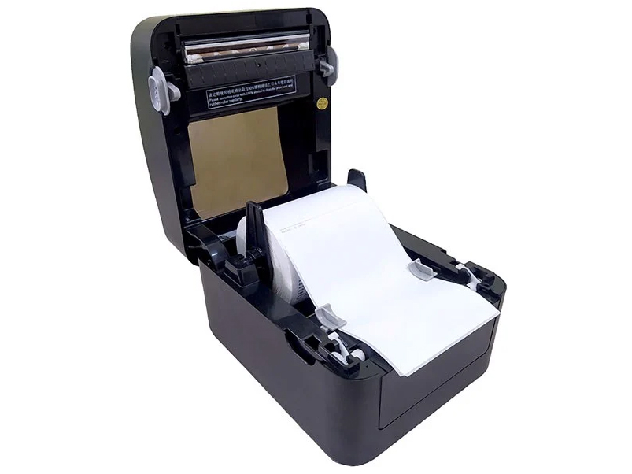
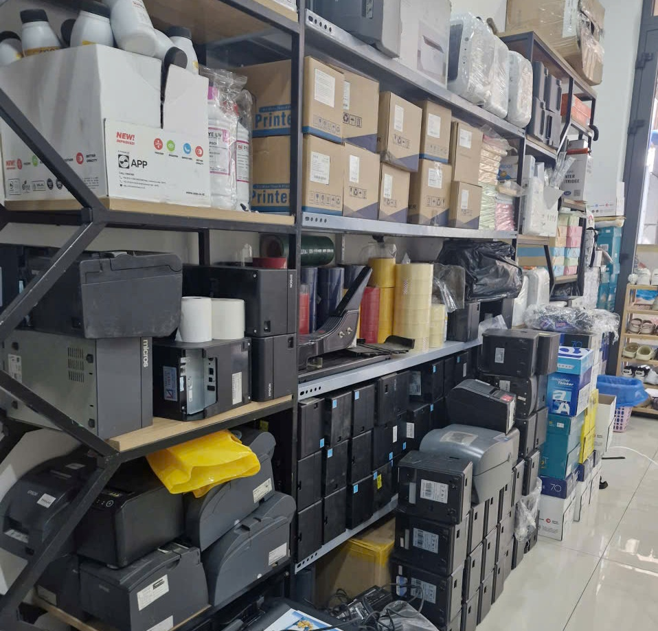

Sửa Máy In Bill Tận Nơi – Khắc Phục Nhanh Lỗi Không In, Kẹt Giấy
Máy in bill là thiết bị quan trọng trong các cửa hàng, quán ăn, siêu thị, quán cà phê… Khi máy in bill gặp sự cố như không in, in mờ, kẹt giấy hoặc không kết nối được, việc bán hàng sẽ bị gián đoạn. Dịch vụ sửa máy in bill tận nơi giúp khắc phục nhanh các lỗi để hệ thống bán hàng hoạt động ổn định trở lại.

Các lỗi máy in bill thường gặp
Trong quá trình sử dụng, máy in hóa đơn có thể gặp một số lỗi phổ biến như:
- Máy in bill không in được
- Máy in bill in ra giấy trắng
- Máy in bill bị mờ chữ
- Máy in bill bị kẹt giấy
- Máy in bill không kết nối máy tính hoặc phần mềm bán hàng
- Máy in bill không nhận cổng USB hoặc LAN
- Máy in bill bị lỗi đầu in nhiệt
- Máy in bill không cắt giấy
Những lỗi này nếu không xử lý đúng cách có thể làm hư hỏng thêm các linh kiện bên trong máy.
Nguyên nhân máy in bill bị hỏng
Một số nguyên nhân phổ biến khiến máy in bill bị lỗi gồm:

- Đầu in bị bám bụi hoặc hư hỏng
- Sử dụng giấy in nhiệt kém chất lượng
- Lỗi driver hoặc cài đặt máy in
- Cáp kết nối bị lỏng hoặc hỏng
- Bo mạch máy in bị lỗi
- Máy in hoạt động liên tục trong thời gian dài
Việc kiểm tra và sửa chữa đúng kỹ thuật sẽ giúp máy in hoạt động ổn định và kéo dài tuổi thọ thiết bị.
Dịch vụ sửa máy in bill tận nơi
Chúng tôi Mực in Trường Phát cung cấp dịch vụ sửa máy in bill tại TPHCM, hỗ trợ tận nơi cho các cửa hàng, nhà hàng, quán cà phê, siêu thị mini…
Các dịch vụ bao gồm:
- Kiểm tra và sửa lỗi máy in bill
- Vệ sinh đầu in nhiệt
- Thay đầu in máy in bill
- Sửa lỗi kết nối máy in với máy tính hoặc phần mềm bán hàng
- Cài đặt lại driver máy in
- Thay dao cắt giấy
- Khắc phục lỗi kẹt giấy
Kỹ thuật viên có mặt nhanh chóng để kiểm tra và xử lý sự cố, giúp khách hàng tiếp tục công việc kinh doanh mà không bị gián đoạn.
Các dòng máy in bill hỗ trợ sửa chữa
Chúng tôi nhận sửa nhiều loại máy in hóa đơn phổ biến như:
- Máy in bill Epson
- Máy in bill Xprinter
- Máy in bill Antech
- Máy in bill Zywell
- Máy in bill Gprinter
Ngoài ra còn hỗ trợ các dòng máy in hóa đơn kết nối USB, LAN, Bluetooth hoặc Wifi.
Lợi ích khi sửa máy in bill đúng kỹ thuật
Việc sửa chữa máy in bill đúng cách giúp:
- Máy in hoạt động ổn định
- Chất lượng in rõ nét
- Tránh hư hỏng linh kiện khác
- Tiết kiệm chi phí thay máy mới
- Đảm bảo hoạt động bán hàng liên tục
Nếu máy in bill của bạn đang gặp sự cố, hãy kiểm tra và sửa chữa sớm để tránh ảnh hưởng đến việc thanh toán và quản lý bán hàng.
Liên hệ sửa máy in bill
Hotline: 0908 327 123 – 08 1900 7394
Tel: 028 6271 1252
Website: https://napmucnhanh24h.com
Chúng tôi hỗ trợ kiểm tra và sửa máy in bill tận nơi nhanh chóng, giúp thiết bị hoạt động ổn định và phục vụ công việc kinh doanh hiệu quả.
💡 Chuyên sửa các bệnh máy in hay gặp:
- Mực in Trường Phát
- sửa máy in bill không in
- máy in bill in mờ
- máy in bill không kết nối máy tính
Cần nạp mực hoặc sửa máy in tận nơi? Mực In Trường Phát có mặt trong 30 phút tại TP.HCM — in test trước khi tính tiền, bảo hành 1 tháng.
0908.327.123 · 0819.007.394 (Zalo cả 2 số)